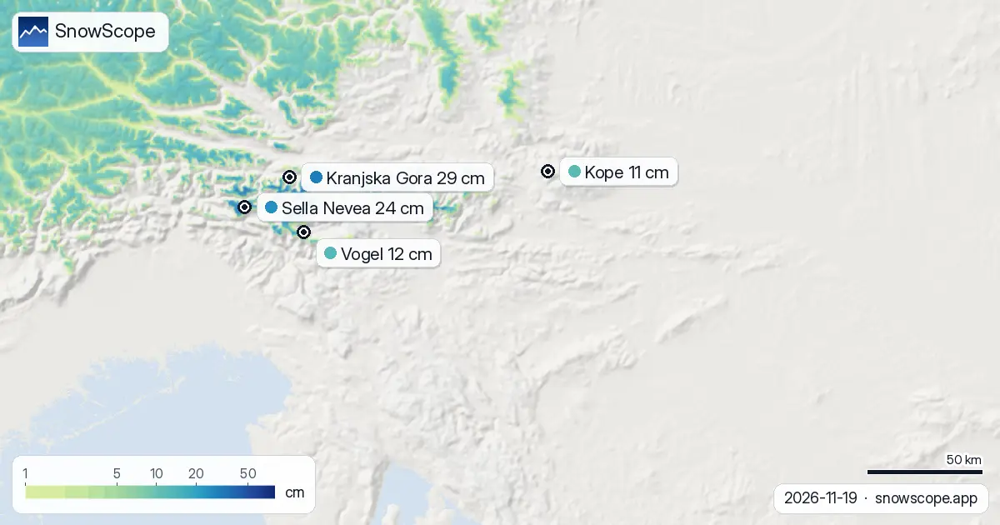
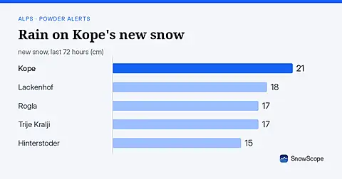

One week, 670 km² more white ground in Slovenia
Slovenia's high ground turned white fast this week: 670 km² more than seven days ago. The jump came from one strong cold spell that brought up to 30 cm of fresh snow to the mountains above 1,500 m.
See the live snow forecast for Kranjska Gora in the SnowScope appSnow depth, powder alerts and the 3D map, free.
How the week unfolded
A week ago, only 90 km² of Slovenia's mapped high ground held snow. By 16 November that had grown to 1,130 km². Then a thaw cut it back to 260 km² by 18 November. The cold returned, and by 19 November snow covered 760 km² again—a net gain of 670 km² since the week began.
This kind of swing is normal in early November: warm spells melt thin snow from lower slopes, cold snaps rebuild it. What matters now is whether the base lasts.
| Day | White area | Most new snow in 3 days | Deepest resort |
|---|---|---|---|
| Monday 16 November | 1,130 km² | 1 cm | Gače |
| Tuesday 17 November | 490 km² | 2 cm | Velika planina |
| Wednesday 18 November | 260 km² | 2 cm | Vogel |
| Thursday 19 November | 760 km² | 30 cm | Kranjska Gora |

Where the new snow fell
The Julian Alps got the most: 55 cm of fresh snow in three days. The Kamnik-Savinja Alps picked up 46 cm. Pohorje, in the east, saw only 3 cm. About 400 km² received at least 5 cm, mostly above 1,500 m.
The single wettest day was 22 November, with up to 17 cm. This was the first snow of the season in many spots.

Snow depth by height
Height decides everything. Below 1,000 m, almost no snow yet (1 % covered, under 1 cm average). Between 1,000 and 1,500 m, thin patches (13 % covered, under 1 cm). Between 1,500 and 2,000 m, a real base now: 9 cm average, 96 % covered. Above 2,000 m, solid: 25 cm average, fully white.
The snow line sits at about 1,400 m. Ski runs above that height have continuous cover. Below it, grass still shows through.
Resort depths on 19 November
Kranjska Gora holds the deepest snow of Slovenia's resorts: 29 cm. This is ahead of normal for late November (usually 2 cm on this date). It picked up 7 cm in the last three days and could gain 9 cm more by Sunday 22 November.
Sella Nevea, higher up at 2,137 m, has 24 cm—way above its typical 2 cm for mid-November. It absorbed 28 cm in three days, an unusually big fall for this small resort. Up to 19 cm more is forecast before Sunday.
The rest: Vogel (12 cm, 8 cm in three days, 17 cm ahead), Kope (11 cm, 2 cm in three days, 9 cm ahead), Krvavec (8 cm, 17 cm in three days, 22 cm ahead). Snow sits on the upper slopes of 14 of Slovenia's 27 resorts.
What comes next
The outlook for the week ahead: up to 35 cm total, with 17 cm in the next three days. After 22 November, the snow pace slows. Days 8 to 14 of the forecast (late November into early December) show up to 24 cm on the wettest slopes.
Early-season snow is thin and sits on bare rock in many places. Runs that are groomed and tracked are safest. Fresh snow on cold ground can be unstable on steep terrain: check the local avalanche bulletin before going off-piste.
How this compares with Austria and Italy
Across the border, Austria is much whiter: 48 % of its high ground covered, with Stubaier Gletscher showing 74 cm. Italy sits at 27 % white, led by La Thuile ski at 66 cm. Slovenia at 10 % is behind both neighbours, but the gap will close if the forecast holds.
Tips for skiers
- Stick to groomed runs for now: the base under early snow is thin and may hide rocks.
- If you plan to ski off-piste, read the local avalanche bulletin first. Fresh cold snow can slide on steep slopes.
- Wait until after 22 November if you can: the new snow will have settled and roads will be cleared.
- Above 1,500 m you will find continuous cover; below 1,000 m expect bare patches.
- Pack a map: the thaw and refreeze mean snow cover is patchy at middle heights (1,000–1,500 m), with only 13 % white.
About these numbers
Resort snow depths are the deepest snow on the resort's upper slopes on the date shown; they are estimates for an area, not a measurement at one point. Forecasts can change. Always read the official avalanche bulletin before going off-piste.
Cite this report
For research, teaching or the press: the numbers and charts are free to reuse under CC BY 4.0 with this citation.
SnowScope (2026), One week, 670 km² more white ground in Slovenia, https://snowscope.app/blog/en/2026/11/slovenia-snow-cover-gain-this-week-19-november-2026.html, accessed 2026-11-19
SnowScope (Atlas Labs). (2026, November 19). One week, 670 km² more white ground in Slovenia. SnowScope snow reports. https://snowscope.app/blog/en/2026/11/slovenia-snow-cover-gain-this-week-19-november-2026.html
BibTeX
@misc{snowscope2026sloveniasnowcovergainthi,
author = {{SnowScope (Atlas Labs)}},
title = {One week, 670 km² more white ground in Slovenia},
year = {2026},
month = nov,
howpublished = {\url{https://snowscope.app/blog/en/2026/11/slovenia-snow-cover-gain-this-week-19-november-2026.html}},
note = {Published 2026-11-19 12:51 UTC; accessed 2026-11-19}
}· CC BY 4.0 · Methods, data and tools →
Kranjska Gora: snow and temperature by height, this winter vs last (tools) →
Follow Kranjska Gora
Free: a message when fresh snow is coming, and the forecast every morning.
More snow reports

Snow is falling on Slovenia's ski mountains today: about 37 cm on Kanin and 21 cm on Krvavec. Where the snow lies, how it compares with past winters, and the next snowy day.

From 13 to 19 November 2026 Slovenia got the most snow and kept it; Serbia and Croatia had a deep but short white weekend; Montenegro only on Durmitor; Bulgaria almost none. The ranking, with links to each country report.

The freezing level reaches 2980 m on November 6, bringing rain to consolidate 21 cm of recent snow at Kope (data from November 3).